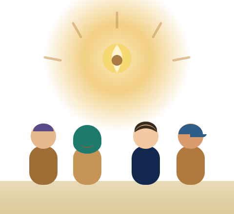

Maor. Raising a generation that will change the world.
The Lubavitcher Rebbe teaches that every child carries an entire world inside them — and that a little light pushes away a great deal of darkness. Maor turns that wisdom into animated stories children actually live by.
Partner with us to reach every child — and help prepare the world for its brightest future.

A vision the world recognizes.
The Lubavitcher Rebbe is widely regarded as one of the most influential moral leaders of our time. In 1978, the United States designated his birthday a national "Education and Sharing Day" — a proclamation renewed by every U.S. President since. In 1994, the U.S. Congress awarded him its highest civilian honor, the Congressional Gold Medal, in recognition of his outstanding contributions to education, morality, and acts of goodness.
The Rebbe's message is not for one community alone: every single person has infinite worth, and one good deed can tip the scale of the entire world. Maor brings that vision to the next generation.
This isn't a vision on paper — it's already changing lives:
A Generation Desperate for Meaning
Today, an algorithm is raising our children. The average child aged 8–12 spends nearly five hours a day on screens built to capture their attention — not to build their character.
The Rebbe gives us a clear vision: every child deserves to know who they are and why they matter. But too many children — of every background — are growing up without it.
The Observant Child
Without the right tools, religious life can feel like a checklist. Maor brings the warmth and depth behind it — helping every child connect to their soul with joy, not pressure.
The Unaffiliated Jewish Child
For many Jewish children, Judaism feels like just a culture. Maor shows them the beauty and depth inside — and the unique purpose only they can live.
Every Other Child
Every child has a mission. Few ever get the chance to find it. The Rebbe champions a moral foundation given by G‑d for all of humanity — seven universal principles for a just and kind world. Maor brings that vision to children everywhere, helping them discover their purpose and live with kindness.
Maor Shifts Mindsets
through storytelling
We use high-quality animated storytelling to capture a child's curiosity.
More than teaching — we engage them.
This breaks down the walls, letting timeless lessons
reshape how a child sees themselves.
They walk away knowing they are deeply loved, deeply capable, and equipped with
exactly what they need to succeed in real life.
We need to reach every single child.
To do that, we are launching two monumental projects.
Why we can do this
We're not starting from scratch. With 2,200+ animated videos, 103,000+ users, and 11 years of experience, Maor has already proven this works. Our new headquarters and proprietary AI engine are built to more than double our reach in the year ahead.
How we'll sustain it
This campaign is launched by founding partners — but Maor is built to last. Ongoing subscriptions and product sales sustain daily operations, so your investment doesn't disappear into a budget. It builds a self-sustaining engine for good.
What is at stake?
A generation raised by algorithms: entertained, but empty. Left without the wisdom to know who they are — or the mission only they can fulfill.
A generation educated, uplifted, and equipped with the mindset to change the world — one child, one story, one spark at a time.
This is more than education. In the Rebbe's vision, it is the work of preparing the world for Moshiach — an era of goodness, wisdom, and peace for all of humanity.